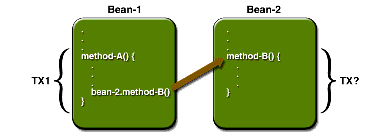

Container-Managed Transactions
In an enterprise bean with container-managed transactions, the EJB container sets the boundaries of the transactions. You can use container-managed transactions with any type of enterprise bean: session, entity, or message-driven. Container-managed transactions simplify development because the enterprise bean code does not explicitly mark the transaction's boundaries. The code does not include statements that begin and end the transaction.
Typically, the container begins a transaction immediately before an enterprise bean method starts. It commits the transaction just before the method exits. Each method can be associated with a single transaction. Nested or multiple transactions are not allowed within a method.
Container-managed transactions do not require all methods to be associated with transactions. When deploying a bean, you specify which of the bean's methods are associated with transactions by setting the transaction attributes.
Transaction Attributes
A transaction attribute controls the scope of a transaction. Figure 30-1 illustrates why controlling the scope is important. In the diagram,
method-Abegins a transaction and then invokesmethod-BofBean-2. Whenmethod-Bexecutes, does it run within the scope of the transaction started bymethod-A, or does it execute with a new transaction? The answer depends on the transaction attribute ofmethod-B.

A transaction attribute can have one of the following values:
Required
If the client is running within a transaction and invokes the enterprise bean's method, the method executes within the client's transaction. If the client is not associated with a transaction, the container starts a new transaction before running the method.
The
Requiredattribute will work for most transactions. Therefore, you may want to use it as a default, at least in the early phases of development. Because transaction attributes are declarative, you can easily change them later.RequiresNew
If the client is running within a transaction and invokes the enterprise bean's method, the container takes the following steps:
If the client is not associated with a transaction, the container starts a new transaction before running the method.
You should use the
RequiresNewattribute when you want to ensure that the method always runs within a new transaction.Mandatory
If the client is running within a transaction and invokes the enterprise bean's method, the method executes within the client's transaction. If the client is not associated with a transaction, the container throws the
TransactionRequiredException.Use the
Mandatoryattribute if the enterprise bean's method must use the transaction of the client.NotSupported
If the client is running within a transaction and invokes the enterprise bean's method, the container suspends the client's transaction before invoking the method. After the method has completed, the container resumes the client's transaction.
If the client is not associated with a transaction, the container does not start a new transaction before running the method.
Use the
NotSupportedattribute for methods that don't need transactions. Because transactions involve overhead, this attribute may improve performance.Supports
If the client is running within a transaction and invokes the enterprise bean's method, the method executes within the client's transaction. If the client is not associated with a transaction, the container does not start a new transaction before running the method.
Because the transactional behavior of the method may vary, you should use the
Supportsattribute with caution.Never
If the client is running within a transaction and invokes the enterprise bean's method, the container throws a
RemoteException. If the client is not associated with a transaction, the container does not start a new transaction before running the method.Summary of Transaction Attributes
Table 30-1 summarizes the effects of the transaction attributes. Both the T1 and the T2 transactions are controlled by the container. A T1 transaction is associated with the client that calls a method in the enterprise bean. In most cases, the client is another enterprise bean. A T2 transaction is started by the container just before the method executes.
In the last column of Table 30-1, the word None means that the business method does not execute within a transaction controlled by the container. However, the database calls in such a business method might be controlled by the transaction manager of the DBMS.
Setting Transaction Attributes
Because transaction attributes are stored in the deployment descriptor, they can be changed during several phases of J2EE application development: enterprise bean creation, application assembly, and deployment. However, it is the responsibility of an enterprise bean developer to specify the attributes when creating the bean. The attributes should be modified only by an application developer who is assembling components into larger applications. Do not expect the person deploying the J2EE application to specify the transaction attributes.
You can specify the transaction attributes for the entire enterprise bean or for individual methods. If you've specified one attribute for a method and another for the bean, the attribute for the method takes precedence. When you specify attributes for individual methods, the requirements differ with the type of bean. Session beans need the attributes defined for business methods but do not allow them for the
createmethods. Entity beans require transaction attributes for the business,create,remove, and finder methods. Message-driven beans require transaction attributes (eitherRequiredorNotSupported) for theonMessagemethod.Rolling Back a Container-Managed Transaction
There are two ways to roll back a container-managed transaction. First, if a system exception is thrown, the container will automatically roll back the transaction. Second, by invoking the
setRollbackOnlymethod of theEJBContextinterface, the bean method instructs the container to roll back the transaction. If the bean throws an application exception, the rollback is not automatic but can be initiated by a call tosetRollbackOnly. For a description of system and application exceptions, see deploytool Tips for Entity Beans with Bean-Managed Persistence.The source code for the following example is in the
<INSTALL>/j2eetutorial14/examples/ejb/bankdirectory.The
transferToSavingmethod of theBankBeanexample illustrates thesetRollbackOnlymethod. If a negative checking balance occurs,transferToSavinginvokessetRollBackOnlyand throws an application exception (InsufficientBalanceException). TheupdateCheckingandupdateSavingmethods update database tables. If the updates fail, these methods throw anSQLExceptionand thetransferToSavingmethod throws anEJBException. Because theEJBExceptionis a system exception, it causes the container to automatically roll back the transaction. Here is the code for thetransferToSavingmethod:public void transferToSaving(double amount) throws InsufficientBalanceException { checkingBalance -= amount; savingBalance += amount; try { updateChecking(checkingBalance); if (checkingBalance < 0.00) { context.setRollbackOnly(); throw new InsufficientBalanceException(); } updateSaving(savingBalance); } catch (SQLException ex) { throw new EJBException ("Transaction failed due to SQLException: " + ex.getMessage()); } }When the container rolls back a transaction, it always undoes the changes to data made by SQL calls within the transaction. However, only in entity beans will the container undo changes made to instance variables. (It does so by automatically invoking the entity bean's
ejbLoadmethod, which loads the instance variables from the database.) When a rollback occurs, a session bean must explicitly reset any instance variables changed within the transaction. The easiest way to reset a session bean's instance variables is by implementing theSessionSynchronizationinterface.Synchronizing a Session Bean's Instance Variables
The
SessionSynchronizationinterface, which is optional, allows you to synchronize the instance variables with their corresponding values in the database. The container invokes theSessionSynchronizationmethods--afterBegin,beforeCompletion, andafterCompletion--at each of the main stages of a transaction.The
afterBeginmethod informs the instance that a new transaction has begun. The container invokesafterBeginimmediately before it invokes the business method. TheafterBeginmethod is a good place to load the instance variables from the database. TheBankBeanclass, for example, loads thecheckingBalanceandsavingBalancevariables in theafterBeginmethod:public void afterBegin() { System.out.println("afterBegin()"); try { checkingBalance = selectChecking(); savingBalance = selectSaving(); } catch (SQLException ex) { throw new EJBException("afterBegin Exception: " + ex.getMessage()); } }The container invokes the
beforeCompletionmethod after the business method has finished, but just before the transaction commits. ThebeforeCompletionmethod is the last opportunity for the session bean to roll back the transaction (by callingsetRollbackOnly). If it hasn't already updated the database with the values of the instance variables, the session bean can do so in thebeforeCompletionmethod.The
afterCompletionmethod indicates that the transaction has completed. It has a singlebooleanparameter whose value istrueif the transaction was committed andfalseif it was rolled back. If a rollback occurred, the session bean can refresh its instance variables from the database in theafterCompletionmethod:public void afterCompletion(boolean committed) { System.out.println("afterCompletion: " + committed); if (committed == false) { try { checkingBalance = selectChecking(); savingBalance = selectSaving(); } catch (SQLException ex) { throw new EJBException("afterCompletion SQLException: " + ex.getMessage()); } } }Compiling the BankBean Example
To compile the classes and interfaces in the
BankBeanexample, follow these steps:
Note: Application Server 8.2 includes a copy of the open source Derby database server. Application Server 8.0/8.1 includes the PointBase database server. If you are using Application Server 8.0/8.1, either follow the instructions in the J2EE Tutorial at
http://java.sun.com/j2ee/1.4/docs/tutorial-update6/doc/index.htmlthat works with Application Server 8.0/8.1 or upgrade to Application Server 8.2 (seehttp://java.sun.com/j2ee/1.4/download.html#appservto download).
Packaging the BankBean Example
The
BankBeansession bean uses container-managed transactions. These steps assume that you are familiar with the steps needed to create and deploy an enterprise application usingdeploytool, as described in Chapter 24.Creating the J2EE Application
Create a new application named
BankAppin:Packaging the Enterprise Bean
Packaging the Application Client
Specifying the Application Client's Enterprise Bean Reference
When it invokes the
lookupmethod,BankClientrefers to the home of an enterprise bean:You specify this reference as follows:
- In the tree, select
BankClient.- Select the EJB Refs tab.
- Click Add.
- In the Coded Name field, enter
ejb/SimpleBank.- In the EJB Type field, select
Session.- In the Interfaces field, select
Remote.- In the Home Interface field, enter
BankHome.- In the Local/Remote Interface field, enter
Bank.- Click OK.
- Select the line you just added.
- Under Sun-specific Settings for
ejb/SimpleBank, select JNDI Name.- In the JNDI Name field select,
BankBean.- Select File
Save.
Deploying the J2EE Application
- Select
BankAppindeploytool.- Select Tools
- Under Connection Settings, enter the user name and password for the Application Server.
- Tell
deploytoolto create a JAR file that contains the client stubs:- Click OK.
- In the Distribute Module dialog box, click Close when the deployment completes successfully.
Running the Application Client
In the terminal window, the client displays these lines:
Methods Not Allowed in Container-Managed Transactions
You should not invoke any method that might interfere with the transaction boundaries set by the container. The list of prohibited methods follows:
You can, however, use these methods to set boundaries in bean-managed transactions.
All of the material in The J2EE(TM) 1.4 Tutorial is copyright-protected and may not be published in other works without express written permission from Sun Microsystems.